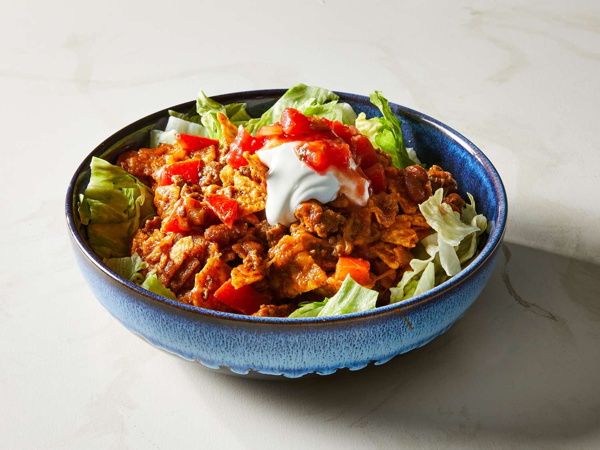

Taco Salad
Back Home

Description
A personal favorite in the household that is quick and easy to make on a busy day.
This dish is a good source of protein as well as being very versatile.
Ingredients
- 1 lb ground beef
- 1 pack taco seasoning
- 3/4 cup water
- lettuce
- tomato
- sour cream
- tortilla chips
- shredded cheese
- any other toppings of choice
Steps
- Cook the hamburger meat until brown.
- Drain off the excess grease from the meat.
- Add the taco seasoning and water to the meat.
- On medium heat cook the meat in the seasoning.
- While the meat is simmering, cut up lettuce, tomato, and any other toppings.
- Remove the taco meat from the heat and put together the taco salad.
- Enjoy!